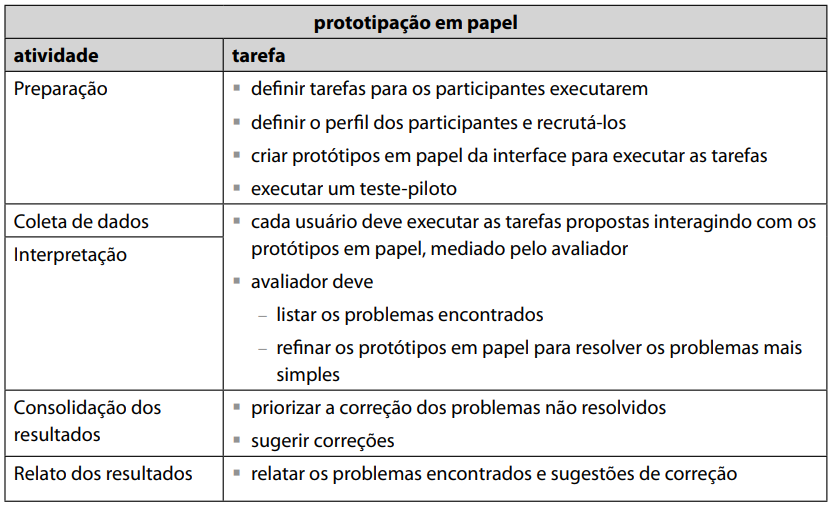
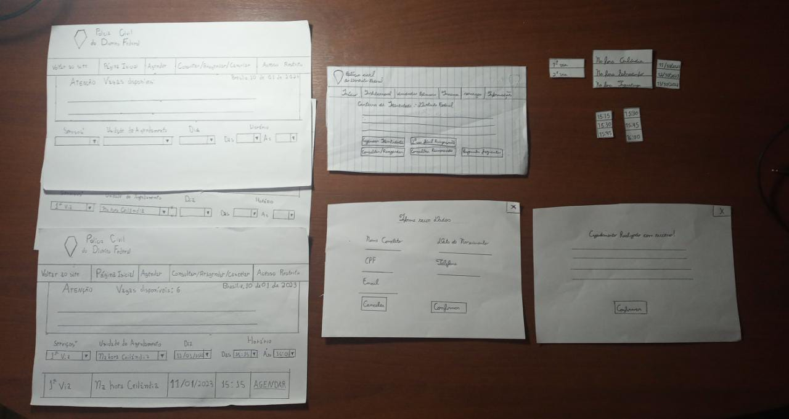

Resultados do Protótipo de Papel
Introdução
O protótipo de baixa fidelidade empregado no projeto, como demonstrado anteriormente, foi o protótipo de papel. Para poder verificar a sua efetividade, ele foi analisado por meio do método de avaliação de prototipação em papel, cujo principal objetivo é avaliar a usabilidade de um design de IHC representado em papel, através de simulações de uso com a participação de potenciais usuários (Simone, Santana, 2021). Após escolhido o método de avaliação de IHC, e aplicado com base na framework DECIDE, foram feitos o teste piloto e a avaliação em si do protótipo de papel.
Utilizando a Prototipação em Papel
De acordo com o planejamento pela framework DECIDE e com a ajuda do professor André Barros, foi determinado que a prototipação em papel seria o modo ideal de avaliar o protótipo de baixa fidelidade, por ser um modo rápido e barato de identificar problemas de usabilidade (Simone, Barbosa, 2021), apropriado para a fase conceitual de desenvolvimento do projeto, de acordo com o processo de design Ciclo de Vida para Engenharia de Usabilidade de Mayhew. A equipe encontrou como de ideal implementação na fase conceitual, parte do Processo de Design de Mayhew da qual a abordagem do protótipo de papel pode ser melhor incluída.
Motivo de Escolha e Aplicação
De acordo com a framework DECIDE, a prototipação em papel foi escolhida e aplicada pelos seguintes motivos:
-
É extremamaente condizente com o objetivo da avaliação, sendo esse avaliar o protótipo de baixa fidelidade de forma conclusiva para obter dados necessários para o prosseguimento do projeto;
-
Seu desenvolvimento, como método de avaliação, envolve a exploração da tarefa a ser realizada pelo usuário, como pode ser visto na figura 1 a seguir. O usuário seguirá a realização da tarefa definida, fornecendo os dados necessários pela avaliação;

Figura 1: Etapas detalhadas do método de avaliação de prototipação em papel. Fonte: Interação Humano-Computador; Página 359
-
As questões práticas, envolvendo o perfil de usuário, o ambiente do teste e a organização da mão-de-obra disponível, assim como as questões éticas, dentre as quais permitirão a avaliação apenas com a leitura e assinatura do termo de consentimento entregue ao usuário, serão facilmente definidas e aplicáveis na prototipação em papel;
-
Por fim, o objetivo da prototipação em papel é fornecer dados que serão avaliados e interpretados pela equipe. É necessário levar em consideração o grau de confiabilidade dos dados obtidos, assim como a validade interna, externa e ecológica do estudo, considerações que serão apresentadas junto aos resultados.
Preparação
A fase de preparação do projeto incluiu a definição de tarefas a serem realizadas, o recrutamento de usuários, a criação de protótipos em papel e a execução de um teste piloto.
Primeiramente, foi elaborada uma tabela de planejamento para a realização das atividades, sendo essa a tabela 1, a seguir:
| Dia e Horário | Atividades Realizadas | Autor(es) |
|---|---|---|
| 05/01/2023, às 19h | Reunião com o Grupo para Divisão de Tarefas | Rodrigo, Guilherme, Yago, Gabriel, Jefferson, Lucas |
| 09/01/2023, às 19h15m | Organização do Protótipo de Papel e Dias para Avaliação | Rodrigo, Guilherme, Yago |
| 10/01/2023, às 14h | Realização do Teste Piloto | Guilherme, Yago |
| 10/01/2023, às 16h | Realização da Avaliação do Protótipo de Papel | Guilherme, Rodrigo |
Tabela 1: Cronograma de atividades relacionadas à avaliação do protótipo de papel.
Fonte : Elaboração de Rodrigo
Definição de Tarefas
Na organização do dia 09/01, foi decidido os conteúdos do protótipo de papel e a tarefa a ser realizada. A tarefa desta avaliação foi apenas a realização do agendamento no site da Polícia Civil do Distrito Federal, realizada por meio do protótipo de papel. A estrutura do protótipo seguiu de forma rigorosa a estrutura estabelecida no planejamento do protótipo de papel.
Recrutamento de Usuários
Dentro do mesmo dia, 5 (cinco) potenciais usuários foram contatados por WhatsApp para a realização da avaliação no dia 10/01. Os usuários previamente demonstraram conhecimento sobre tentativas de agendamento para serviços da identidade, mas apenas 1 usuário confirmou e apareceu para a realização da avaliação.
Criação do Protótipo de Papel para a Execução das Atividades
O protótipo de papel criado para a avaliação por prototipação de papel está ilustrado abaixo, pela figura 2. Ele foi elaborado com o objetivo de representar facilmente as opções do agendamento;
-
Ao invés do sistema rígido no site que define as horas na qual abrem vagas, esse sistema apresenta todos os horários disponíveis no local no qual o usuário deseje visitar, sendo executado com base em planejamento de horários já presentes no sistema, que difere do site da PCDF, o qual abre diversas vagas em vários locais diferentes, que podem ou não ser visitáveis pelo usuário.
-
O protótipo foi desenvolvido para ser facilmente entendível por qualquer usuário, e intuitivo o suficiente para a realização simples da tarefa. A equipe se baseou nas metas de usabilidade, especialmente as de eficácia, eficiência, fácil aprendizagem, e de segurança para o desenvolvimento do protótipo.

Figura 2: Protótipo de papel utilizado na avaliação. Fonte: Elaboração de Guilherme e Yago
Execução e Resultados do Teste Piloto
O vídeo a seguir apresenta a execução do teste piloto do projeto no dia 10/01.
Como observado, o teste correu bem duranto todo seu prolongamento. Não há correções a serem feitas, e julgamos que o teste não necessita de melhorias imediatas, visto que ele tem natureza de baixa fidelidade. O que deve ser levado em consideração é que os participantes do teste já sabiam como o processo deveria ocorrer e quais seus passos, logo, o resultado do teste com usuário tende a diferenciar-se.
Coleta de Dados e Interpretação de Dados
O objetivo dessa atividade de avaliação por interrogação é de registrar as experiências vivenciadas pelos usuários participantes. A cordialidade do avaliador Rodrigo foi essencial para deixar a usuária à vontade para relatar o processo de prototipação aplicado pela equipe.
Após as etapas iniciais de recepção do participante, apresentação e assinatura do termo de consentimento, é iniciado a sessão de observação. Os dois avaliadores responsáveis da dinâmica atentaram-se aos passos tomados pela usuária e o processo inteiro foi gravado para a interpretação futura dos dados.
Com o vídeo em mãos, bastou editá-lo para que ficasse apresnetável. Então, os avaliadores o reassistiram prestando atenção em detalhes como possíveis hesitações por parte da usuária na hora de prosseguir as etapas da tarefa. Tendo em vista todos esses pequenos aspectos, tão como o relato da participante convidada, julgou-se um protótipo intuitivo, eficiente e realista, que consegue guiar a usuária pela tarefa sem causar estranhamentos ou confusões. Melhorias e correções serão, pois, suspensas por enquanto.
Resultados da Avaliação
A avaliação no que tange o protótipo de papel verificou-se um sucesso. Os processo do método investigativo ocorreu de acordo com o que foi previamente planejado pela equipe e os resultados foram satisfatórios. A usuária entrevistada julgou o protótipo de papel como "completo" e "exatamento como necessário", portanto não tendo dificuldades para executar o que lhe foi atribuída.
Refêrencias
[1] BARBOSA, Simone et al. Métodos de- Avaliação de IHC. In: BARBOSA, Simone. Interação Humano-Computador. Elsevier, 2021. p. 358-362
Histórico de Versão
| Data | Versão | Descrição | Autor(es) | Revisor(es) |
|---|---|---|---|---|
| 21/12/2022 | 1.0 | Criação do artefato. | Rodrigo, Yago e Guilherme | Gabriel e Rodrigo |
| 21/12/2022 | 1.1 | Execução e resultados do teste piloto. | Yago | Gabriel e Rodrigo |
| 21/12/2022 | 1.2 | Coleta de dados e Interpretação de dados | Yago | Gabriel e Rodrigo |
| 21/12/2022 | 1.3 | Resultados da avaliação | Rodrigo, Yago e Guilherme | Gabriel e Rodrigo |